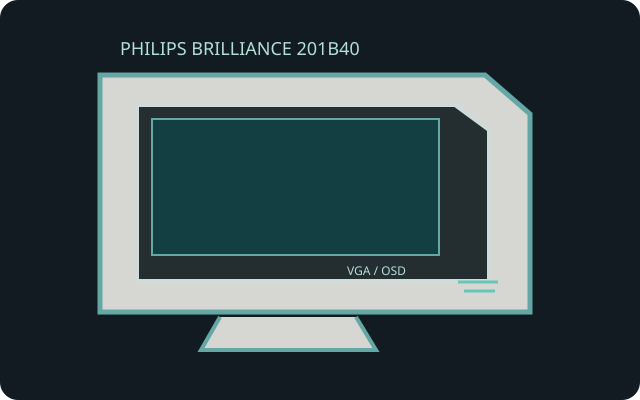

[ INDIVIDUAL COMPONENT // PHILIPS ]
Philips Brilliance 201B40/75H
A 21-inch-class Brilliance monitor from Philips' flat aperture-grille CRT line, with multiscan analog operation and model-specific display controls.

IDENTIFICATION: This record names the Philips Brilliance 201B40 family and the /75H variant identified in its archived user guide; compare the full rear-label suffix before applying region-specific power or mode data.
Specifications
| Model / image size | Philips Brilliance 201B40/75H; 21-inch nominal CRT, approximately 20-inch viewable 4:3 image, flat aperture-grille type. |
|---|---|
| Pitch | 0.25 mm stripe pitch; older documentation may separately describe horizontal dot pitch, so retain the label's measurement convention. |
| Resolution and refresh | No fixed native resolution. Recommended mode is 1600 × 1200 at approximately 85–86 Hz; maximum resolution is 1920 × 1440 with refresh constrained by scan limits. Consult the /75H manual timing table for exact mode pairings. |
| Connectors | HD15 / DE-15 analog RGB video input; grounded detachable AC power inlet. No digital DVI/HDMI/DisplayPort input. |
| Power | AC mains supply; operating draw is listed around 135 W depending on selected timing and brightness. Rear regional nameplate controls voltage/frequency requirements. |
| Host compatibility | Analog VGA RGB output and supported mode required. For digital-only hosts, use an active DAC with scan timing supported by the monitor; connector adapters alone do not convert the signal. |
Compatibility and safety
Do not assume settings for another Brilliance 201B suffix apply to the /75H. Confirm signal timing and nameplate power before connection. CRT cabinets are heavy and have dangerous high-voltage circuits; never remove the cover or perform internal adjustments without qualified CRT service expertise.
Manuals and product sources
- Philips 201B4/201B40 user manual archiveDigitized operating instructions for the Brilliance 201B product family.
- Philips 201B40 manufacturer brochureArchived model-family product specification leaflet.